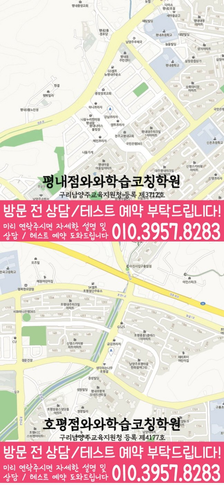

30초 핵심 안내
평내동 영수학원 선택 전 확인할 기준
평내동 영수학원은 평내동의 초3~초6, 중1~중3, 고1~고2 학생과 학부모가 학교 일정, 영어·수학 상태, 영어 어휘·구문과 수학 개념·적용의 연결을 확인하도록 돕는 정보입니다. 제공 센터 주소는 경기 남양주시 경춘로 1256번길 9 501호이고, 제공된 학교 참고 정보는 장내초·호평초·장내중·호평중·호평고·금곡고·판곡고이며 실제 계획은 최근 교재와 오답 기록을 확인한 뒤 조정합니다.
English & Math Learning Guide
평내동 영수학원을 찾는 학부모를 위해 초3~초6, 중1~중3, 고1~고2 학생의 학년 단계, 영어 독해 근거와 수학 풀이 근거의 기록, 과제와 오답 점검 기준을 안내합니다.
30초 핵심 안내
평내동 영수학원은 평내동의 초3~초6, 중1~중3, 고1~고2 학생과 학부모가 학교 일정, 영어·수학 상태, 영어 어휘·구문과 수학 개념·적용의 연결을 확인하도록 돕는 정보입니다. 제공 센터 주소는 경기 남양주시 경춘로 1256번길 9 501호이고, 제공된 학교 참고 정보는 장내초·호평초·장내중·호평중·호평고·금곡고·판곡고이며 실제 계획은 최근 교재와 오답 기록을 확인한 뒤 조정합니다.
수업 안내 이미지

센터 위치 안내

평내동 영수학원을 알아볼 때는 고1·고2 학생의 문법 적용 근거를 보완하는 과제와 보호자 확인 의존을 조정하는 점검 주기가 각각 제시되는지부터 보세요. 구체적으로 생각해 볼 학생은 고1·고2 학생 가운데 문법 규칙을 외워도 실제 문장에 적용할 때 선택 근거가 흐려지는 학생이며, 부모가 확인할 때만 오답노트를 펼쳐 보는 편입니다. 대표 어려움이 영어 수행에서 먼저 나타나므로 영어 문법 적용을 핵심 항목으로 살펴보고, 수학 개념 연결은 실제 오답 자료에서 필요가 확인될 때만 보완 항목으로 두고, 문법 적용 근거 보완 기준과 보호자 확인 의존 조정 기준은 서로 다른 자료에서 확인합니다. 따라서 이곳에서 학습오답관리를 확인할 때는 개념·계산·해석·시간 등 오답 원인을 나누는 기준을, 해설을 덮고 다시 풀 날짜와 도움 없이 해결하는 완료 기준을, 같은 유형의 유사 문제로 옮겨 해결하고 다음 복습 간격을 정하는 방식을 나누어 살펴봐야 합니다. 평내동에서 영수학원을 비교할 때 결과 약속보다 수업 전후의 영어·수학 기록을 우선해서 보는 기준을 설명합니다.
평내동 영수학원을 알아보는 단계에서는 주소와 학년 정보를 먼저 맞춰야 상담 내용이 구체적이 됩니다. 제공 자료의 센터 위치는 경기 남양주시 경춘로 1256번길 9 501호입니다. 영어·수학 공통 가능 학년은 초3·초4·초5·초6·중1·중2·중3·고1·고2입니다.
평내동 제공 자료에는 장내초·호평초·장내중·호평중·호평고·금곡고·판곡고가 학교 참고 목록으로 정리되어 있습니다. 해당 학교 학생이라면 최근 시험지나 주간 과제를 가져와 영어·수학 학습에서 먼저 조정할 부분을 구체적으로 확인하는 것이 좋습니다.
제공 자료에는 와와학습코칭센터 평내점의 등록번호로 구리남양주교육지원청 등록 제3712호가 표시되어 있습니다. 평내동 학부모는 이 정보와 교습비 자료를 확인한 뒤 수업 시간뿐 아니라 과제 확인과 재학습 방식까지 질문하는 편이 좋습니다.
과목별 학습관리를 확인할 때에는 과목별 담당과 피드백 시점, 질문 회수 방식이 서로 다를 수 있는지도 상담에서 물어보되, 문법 적용 근거 보완 자료는 과목별로 나누고 보호자 확인 의존 조정 결과는 주간표에서 확인합니다. 한 과목의 과제가 밀렸다고 다른 과목을 모두 멈추기보다 학생에게 최소 유지 분량을 정해 두면 학습 리듬이 한꺼번에 무너지지 않으며, 고1·고2 학생의 두 과목 완료 기준에는 문법 적용 근거 보완과 보호자 확인 의존 조정을 각각 반영합니다. 결국 과목별 학습관리의 가치는 이름이 아니라 영어·수학 계획에서 각 과목의 약점을 그에 맞는 행동으로 바꾸어 주는지에 달려 있고, 영어 문법 적용과 수학 개념 연결은 보호자 확인 의존 조정 기록과 분리해 살핍니다.
학생이 문법 규칙을 외워도 실제 문장에 적용할 때 선택 근거가 흐려지는 데다 부모가 확인할 때만 오답노트를 펼쳐 보는 편이라면, 상담의 출발점은 진도보다 오류가 생긴 순간을 찾는 일입니다. 과목별 학습관리 상담에서는 최근 풀던 영어 지문 한 편, 수학 오답 두세 문항, 일주일 과제 기록처럼 학생의 실제 자료를 펼쳐 놓는 편이 실용적이며, 진단표에는 문법 적용 근거 보완 자료와 보호자 확인 의존 조정 기록을 다른 칸에 둡니다. 문법 적용 근거 보완과 보호자 확인 의존 조정을 함께 살필 때, 이 지역의 특정 학교 성향을 추정하기보다 학생이 설명을 멈추는 순간, 답을 고친 흔적, 다시 푼 날짜를 점검하면 우선순위가 더 선명해집니다. 상담에서는 영어의 근거 확인 어려움과 수학의 풀이 과정 막힘을 구분해 설명하는지를 점검할 수 있고, 고1·고2 학생의 진단은 문법 적용 근거 보완 단서와 보호자 확인 의존 실행 결과를 구분합니다.
학습오답관리의 오답 원인·재풀이 날짜·독립 해결과 전이를 다시 볼 때는 개념·계산·해석·시간 등 오답 원인을 나누는 기준을 최신 안내와 대조하고, 같은 유형의 유사 문제로 옮겨 해결하고 다음 복습 간격을 정하는 방식을 학생의 기록에서 재확인해야 합니다. 학생의 학습 과정을 영어 지문 표시와 수학 풀이 흔적, 과제 시작 기록, 재풀이 결과로 구체화해야 하며, 계획 수정의 근거는 문법 적용 근거 보완 기록과 보호자 확인 의존 조정 기록으로 나누어 남깁니다. 마지막에는 넓은 장점 표현보다 학생이 유지할 행동 하나와 다음에 바꿀 행동 하나가 남는지 확인해 보되, 다음 계획에는 문법 적용 근거 보완 일정과 보호자 확인 의존 조정 시점을 따로 표시합니다.
금곡고 학생이 이 지역 학원을 알아볼 때는 시험 날짜와 범위를 학교가 제공한 최신 자료로 확인해야 합니다. 학교 이름만으로 출제 경향을 가정하지 않으며, 평내동에서는 학교별 특징을 확인된 자료 안에서만 반영합니다. 판곡고 학생은 상담에서 현재 교재와 필기, 학교가 안내한 범위를 함께 보여 주면 과목별 복습 질문을 더 정확히 만들 수 있습니다. 제공 자료에서 확인한 주소는 '경기 남양주시 경춘로 1256번길 9 501호'입니다. 학생은 학교와 가정 중 실제 출발 장소를 기준으로 등하원 동선을 점검해야 하며, 이동 조건은 문법 적용 근거 보완과 보호자 확인 의존 조정과 구분해 기록합니다. 학생의 내신 준비는 확정된 범위와 남은 수업 횟수, 영어 암기량, 수학 재풀이량을 한 일정에 놓을 때 실행 여부를 살피기 쉽고, 문법 적용 근거 보완과 보호자 확인 의존 조정은 학교 정보가 아니라 학생의 학습 기록에서 확인합니다.
첫 번째로, 상담에서는 개념·계산·해석·시간 등 오답 원인을 나누는 기준을 학습오답관리의 확인 항목으로 물어봅니다. 다음으로, 해설을 덮고 다시 풀 날짜와 도움 없이 해결하는 완료 기준을 중심으로 학습오답관리 설명이 학생의 계획과 연결되는지 묻고, 확인된 내용과 아직 확인되지 않은 부분을 나누어 답변해 달라고 요청합니다. 마지막으로, 학생에게 맞는지 판단하려면 같은 유형의 유사 문제로 옮겨 해결하고 다음 복습 간격을 정하는 방식을 구체적으로 물어 오답 원인·재풀이 날짜·독립 해결과 전이의 적용 범위와 미확인 항목을 구분합니다. 이 확인 과정을 거치면 학습오답관리의 오답 원인·재풀이 날짜·독립 해결과 전이 가운데 확인된 내용과 학생에게 아직 적용할 수 없는 내용을 구분할 수 있습니다.
Information Basis
센터명·주소·등록번호·학교 참고 목록은 제공 자료 범위에서 확인했습니다. 실제 수업 가능 학년과 과목, 시간표는 상담 시점에 다시 확인해야 합니다.
FAQ
학생의 최근 영어 지문과 수학 오답, 사용 중인 교재, 일주일 과제 기록을 준비하면 좋으며, 준비한 자료에서 문법 적용 근거 보완 단서와 보호자 확인 의존 조정 단서를 구분합니다. 상담에서는 문법 규칙을 외워도 실제 문장에 적용할 때 선택 근거가 흐려지는 상태를 점수 한 줄보다 구체적으로 설명할 수 있고, 확인 질문도 학생의 상황에 맞게 바꿀 수 있습니다.
영어 과제는 읽기·회상 단위로, 수학 과제는 풀이·재풀이 단위로 보는 것이 실용적이며, 문법 적용 근거 보완 결과와 보호자 확인 의존 실행 결과를 다음 점검일에 따로 확인합니다. 평내동에서는 영어 문법 적용과 수학 개념 연결을 확인 항목으로 두되 실제 자료에서 약점이 드러난 과목에 시간을 더 배정할 수 있습니다.
금곡고 학생은 현재 교재와 학교가 알린 평가 범위를 상담의 기준으로 삼으면 됩니다. 가정은 확인되지 않은 다른 학교의 특징을 추가하지 않으며, 평내동 학생의 범위는 받은 공식 자료로 다시 확인합니다. 평내동에서는 생활권 정보와 학교별 평가 자료를 서로 다른 정보로 다룹니다.
상담에서 개념·계산·해석·시간 등 오답 원인을 나누는 기준을, 해설을 덮고 다시 풀 날짜와 도움 없이 해결하는 완료 기준을, 같은 유형의 유사 문제로 옮겨 해결하고 다음 복습 간격을 정하는 방식을 각각 물어보세요. 제공 여부를 미리 단정하지 말고 정답 필사보다 빈 종이 재풀이와 유사 문제 해결 결과가 남는지도 실제 안내와 학생의 기록에서 다시 확인해야 합니다.
Parent Perspective
※ 평내동 학부모가 상담에서 확인할 상황을 재구성한 예시이며, 실제 수강 후기나 특정 성적 결과가 아닙니다.
아이는 문법 규칙을 외워도 실제 문장에 적용할 때 선택 근거가 흐려지는 편이고, 부모가 확인할 때만 오답노트를 펼쳐 보는 편입니다. 처음에는 두 과목의 공부 시간을 같게 늘리려 했지만 영어 문법 적용과 수학 개념 연결의 오류 원인이 다르다는 점을 먼저 보려고 합니다. 이번 상담에서는 학습오답관리의 오답 원인·재풀이 날짜·독립 해결과 전이를 점검하고, 아이가 다음 행동을 자기 말로 설명할 수 있는지까지 듣겠습니다.